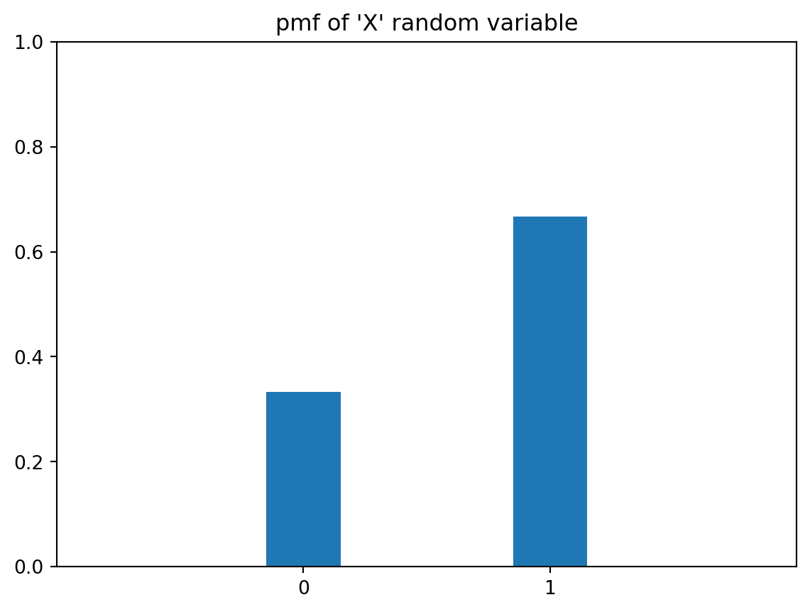

from math import pi
from IPython.display import IFrame,Video
import mesa
import seaborn as sns
import matplotlib.pyplot as plt
import nltk
from nltk import word_tokenize
from numpy.random import default_rng
import numpy as np
import pandas as pd
from scipy import stats
from scipy.stats import binom, bernoulli, norm, expon, uniform7 Simulation
7.1 Random Variables
In statistics, we use random variables to describe the probabilistic behaviour of phenomenon. Random variables are real numbers that represent the phenomena we observe. For instance, we might let \(X\) represent a coin toss, with \(X=1\) representing Heads and \(X=0\) representing Tails.
Random variables come with a rule (or function) that prescribes the probabilities with which it takes on particular values. For instance, if we had a fair coin, then the rule would be that \[ P(X=1) = P(X=0) = \frac{1}{2} \]
On the other hand, a biased coin might follow the rule \[ P(X=1) = \frac{2}{3},\quad P(X=0) = \frac{1}{3} \]
This rule tells us which events are more likely, and which are less likely.
Discrete vs. Continuous Random Variables.
Discrete random variables take on only a countable number of values. Examples are:
- A coin toss (\(\{0, 1\}\))
- The number of taxis passing by a particular junction between 12noon and 1pm. (\(\{0, 1, 2, \ldots, \}\))
- The number of coin tosses until we observe Heads. (\(\{1, 2, 3, \ldots, \}\))
Discrete random variables are defined by their probability mass function (pmf), which is just a table or a function describing \(P(X=i)\) for all possible \(i\) values. Once we know the pmf of a random variable, we know everything about it - the mean, variance, quantiles, maximum values, etc.
We can visualise a pmf using a bar-chart. Here is the pmf for the above biased coin.
plt.bar([0,1], [1/3, 2/3], tick_label=['0', '1'], width=0.3);
plt.xlim(-1,2);
plt.ylim(0,1);
plt.title('pmf of \'X\' random variable' );
Here is the pmf for a random variable representing the total number of Heads after 10 tosses of that same coin. Suppose we call that new random variable \(Y\).
probs = binom.pmf(np.arange(0, 11), n=10, p=2/3)
plt.bar(np.arange(0, 11), probs);plt.ylim(0,1);
plt.title('pmf of no. of coin tosses');If we wish to find the probability of events, for instance, \(P(Y \le 4)\), we sum up the heights of the bars.
Continuous random variables are defined by what is known as a probability density function. Continuous random variables can take on an uncountable number of values, for instance, all real numbers in the interval \([0,1]\).
x = np.linspace(-3, 3, num=100)
y = norm.pdf(x)
plt.figure(figsize=(12,4), facecolor='0.9')
plt.subplot(131)
plt.plot(x,y)
plt.ylim(0,1)
plt.title('Normal pdf')
y = expon.pdf(x[x>0])
plt.subplot(132)
plt.plot(x[x>0],y)
plt.ylim(0,1)
plt.title('Exponential pdf');
x = np.linspace(0, 1, num=100)
y = uniform.pdf(x)
plt.subplot(133)
plt.plot(x,y)
plt.ylim(0,1.1)
plt.title('Uniform pdf');
Generating Random Variates
With a computer, we can generate random variables from almost any distribution. There are built-in routines to generate from the ‘named’ distributions. For instance,
rng = default_rng(5003)
yvals = np.zeros((3,300))
yvals[0,:] = rng.normal(size=300)
yvals[1,:] = rng.exponential(size=300)
yvals[2, :] = rng.uniform(size=300)
pdfs = ['Normal', 'Exponential', 'Uniform']
plt.figure(figsize=(12,4), facecolor='0.9')
for i in np.arange(0,3):
plt.subplot(1, 3, i+1)
plt.hist(yvals[i,:], density=True, histtype='step')
plt.title(pdfs[i])
plt.ylim(0, 1.05)Notice how the (normalised) histograms look a lot like the corresponding pdfs.
7.2 General Principles in Simulation Studies
Introduction
The objective of any simulation study is to estimate an expectation \(E(X)\). Simulation studies involve the use of a computer to generate independent copies of the random variable of interest \(X\). Here are a couple of examples where simulation studies would be applicable.
Through the estimation of \(E(X)\), simulation studies allow us to:
- Consider different planning scenarios and estimate the throughput from them.
- Study the emergent behaviour of complex situations.
Example 7.1 (Example: Insurance Claims)
Before the financial year begins, an insurance company has to decide how much cash to keep, in order to pay out the claims for that year. Suppose that claims are independent of each other and are distributed as \(Exp(1/200)\) dollars. This means that the probability density function (pdf) of the random variable is \(f_X(x) = \frac{1}{200} \exp(-x/200),\; x > 0\)
Also suppose that the number of claims in a year is a Poisson random variable with mean 8.2.
An actuary has been asked to determine the size of the reserve fund that should be set up, and he recommends $12,000. We might consider answering the following question using simulation:
- What is the probability that the total claims will exceed the reserve fund?
If we let \(Y\) be the random variable representing the total sum of claims, we are interested in estimating \(P(Y > 12000)\). Since probabilities are expectations, we can use simulation to estimate this value.
Example 7.2 (Example: Sandwich Shop Closing Time)
Here is a slightly more sophisticated example.
Suppose that you run a sandwich shop, which is open from 9am till 5pm. Your philosophy has always been to serve every customer who has entered before 5pm, even if that requires you to stay back until they have been served. You would like to estimate the mean amount of overtime you have to work.
If you are willing to assume that the inter-arrival times of customers is \(Exp(3)\) hours, then it is possible to simulate this process to estimate the mean time that you would have to remain open, beyond 5pm.
Steps in a Simulation Study
The two examples above are known as Discrete Event Simulations. It is one type of simulation study. Another type of simulations are Agent-Based Models. No matter the type of simulation, the basic steps in a simulation study are:
- Identify the random variable of interest and write a program to simulate it.
- Generate an iid sample \(X_1, X_2, \ldots, X_n\) using this program.
- Estimate \(E(X)\) using \(\bar{X}\).
Before proceeding, let us refresh our knowledge of the properties of the sample mean.
Theory
There are two important theorems that simulation studies rely on. The first is the Strong Law of Large Numbers (SLLN).
Strong Law of Large Numbers
If \(X_1, X_2, \ldots, X_n\) are independent and identically distributed with \(E(X) < \infty\), then \[ \bar{X} =\frac{1}{n} \sum_{i=1}^n X_i\rightarrow E(X) \quad \text{with probability 1.} \]
In the simulation context, it means that as we generate more and more samples (i.e. increase \(n\)), our sample mean \(\bar{X}\) converges to the desired value \(E(X)\), no matter what the distribution of \(X\) is.
The second theorem that aids us is the Central Limit Theorem (CLT).
Central Limit Theorem
Let \(X_1, X_2, \ldots, X_n\) be i.i.d., and suppose that
- \(-\infty < E(X_1) = \mu < \infty\).
- \(Var(X_1) = \sigma^2 < \infty\).
Then \[ \frac{\sqrt{n} (\bar{X} - \mu)}{\sigma} \Rightarrow N(0,1) \] where \(\Rightarrow\) denotes convergence in distribution.
This is sometimes informally interpreted to mean that when \(n\) is large, \(\bar{X}\) is approximately Normal with mean \(\mu\) and variance \(\sigma^2/n\). In the simulation context, we can use this theorem to obtain a confidence interval for the expectation that we are estimating.
Also take note of the following properties of the sample mean and variance:
Sample Estimates
It can be shown that both the sample mean and sample standard deviation are unbiased estimators. \[ E(\bar{X}) = E(X), \quad E(s^2) = \sigma^2 \] where \(s^2 = \frac{\sum (X_i - \bar{X})^2}{n-1}\). :::
To obtain a \((1-\alpha)100%\) confidence interval for \(\mu\), we use the following formula, from the CLT:
\[ \bar{X} \pm z_{1-\alpha/2} \frac{s}{\sqrt{n}} \]
When our goal is to estimate a probability \(p\), we have to introduce a corresponding indicator variable \(X\) such that
\[ X = \begin{cases} 1 & \text{with probability $p$} \\ 0 & \text{with probability $1- p$} \end{cases} \]
In this case, the formula for the CI becomes \[ \bar{X} \pm z_{1-\alpha/2} \sqrt{\frac{\bar{X}(1-\bar{X})}{n}} \]
7.3 Object-Oriented Programming in Python
Python has been developed as both a functional and object-oriented programming language. Much of the code we will soon use for the mesa package involves creation of an instance, and then accessing the attributes (data or methods) of that instance.
The syntax for defining a class is:
class ClassName:
<statement-1>
.
.
<statement-N>A class definition typically consists of function definitions and attributes. A special function within a class definition, __init__(), can be used to set the initial state of instances of a class. Think of a class definition as a template, and instances as copies made using that template.
Consider the following class Circle.
We can create multiple circles using this template. Note the use of the keyword self to refer to attributes of the instance.
7.4 Introduction to Agent Based Models
Agent-based models (ABM) consist of individual elements (agents) interacting with one another. One of the most common uses of an agent-based model is to understand how the behaviour of the system, as a whole, emerges from simple rules for the agents’ and their interactions. A very famous example is from the simulation software used to create battle scenes in The Lord of The Rings movies from the early 2000s. The following video was from an article on the MASSIVE software.
#IFrame(src='https://house-fastly-signed-us-east-1-prod.brightcovecdn.com/media/v1/pmp4/static/clear/6415844878001/e4f4a5c9-0393-4fe5-9986-d5c5b237070a/c276cef7-9eba-4498-a802-9f7867c41334/main.mp4?fastly_token=NjZlYjgxYzlfYWYzYzhmNDQ0ODhmM2Y4NmE1ODIzNzU1ZmE3ODhiNmM4NGZiNjAxNTc2YzZhYmI1NWNlMzYxNzliOGNjY2QxZF9odHRwczovL2hvdXNlLWZhc3RseS1zaWduZWQtdXMtZWFzdC0xLXByb2QuYnJpZ2h0Y292ZWNkbi5jb20vbWVkaWEvdjEvcG1wNC9zdGF0aWMvY2xlYXIvNjQxNTg0NDg3ODAwMS9lNGY0YTVjOS0wMzkzLTRmZTUtOTk4Ni1kNWM1YjIzNzA3MGEvYzI3NmNlZjctOWViYS00NDk4LWE4MDItOWY3ODY3YzQxMzM0L21haW4ubXA0',
# width=960, height=480)
Video("../data/lotr.mp4", width=960, height=480)Today, ABM are used in scenarios where the overall behaviour of a system is to complicated to predict by modeling the stages of interaction. Examples of these scenarios are:
- COVID-19 modeling,
- Modeling of driver behaviour on roads for the purpose of understanding traffic,
- Modeling of swarms, e.g. locusts, fish, etc, and
- Modeling of effects of networks in marketing and in organisations.
The essential characteristics of an ABM are the following:
- Agents at various scales,
- Agents make decisions, based on defined behaviours
- Agents interact with one another in time and possibly space.
Remember that our role as analysts is to imbue the agents with the appropriate traits (behaviours), interactions and probabilities. Otherwise, our model is not going to yield useful results.
Introduction to Mesa
Mesa is a Python package for running simulations using Agent-Based Models (ABM). Before we proceed, here are a few overarching concepts about this framework:
- Agents are defined using classes. Within the class definition for an agent, we need to define:
- how the agent is initialised,
- what the agent does at each time-step.
- The model is defined as a class as well. The model constitutes agents (defined through the class(es) above) and a scheduler that determines the sequence in which agents act, and the space in which they act.
Mesa also comes equipped with data collection tools to extract information from agents and/or the model at each step of the scheduler. Both the agent and the model classes should define a step() method. In ABM, a step is the smallest unit of time. It is also sometimes referred to as a “tick”.
7.5 Boltzmann Model Overview
This is a simple model from social sciences, to demonstrate the use of mesa for agent-based modeling. In this agent-based economy, the assumptions are:
- There are a certain number of agents.
- All agents begin with 1 unit of money.
- At every step of the model, an agent gives 1 unit of money (if they have it), to another, randomly chosen, agent.
The reference for this paper is Dragulescu and Yakovenko (2002). Before we begin the model, think about what you expect to see after some time.
7.6 Agent and Model Classes (v1)
The code below contains our initial definition for the agent class. The initialisation simply consists of setting the wealth for the agent. The step method defines that the agent will pick an agent (possibly itself) and transfer 1 unit of money to that agent.
class MoneyAgent(mesa.Agent):
"""An agent with fixed initial wealth."""
def __init__(self, model):
# Pass the parameters to the parent class.
super().__init__(model)
# Create the agent's variable and set the initial values.
self.wealth = 1
def step(self):
# Verify agent has some wealth
if self.wealth > 0:
other_agent = self.random.choice(self.model.agents)
other_agent.wealth += 1
self.wealth -= 1The following flowchart depicts the flow of events for each agent. It is useful to sketch such a flowchart when implementing agent-based models, since it allows for easier debugging and information sharing with colleagues.
The next class defines the model itself. The initialisation of a model typically consists of populating it with various agents. However, it is also important to define the scheduler. In this case, the scheduler is based on RandomActivation. This means that at every step, the agents are shuffled, and then each of their step methods are executed in that order. The order changes at every time step. It is necessary to avoid running all agents’ steps at the same time to avoid clashes.
class MoneyModel(mesa.Model):
"""A model with some number of agents."""
def __init__(self, N):
super().__init__()
self.num_agents = N
# Create scheduler and assign it to the model
# self.schedule = mesa.time.RandomActivation(self)
# self.agents.shuffle_do("step")
# Create agents
for i in range(self.num_agents):
a = MoneyAgent(self)
# Add the agent to the scheduler
#self.schedule.add(a)
def step(self):
"""Advance the model by one step."""
# The model's step will go here for now this will call the step method of each agent and print the agent's unique_id
# self.schedule.step()
self.agents.shuffle_do("step")The next cell creates a model with 10 agents, and runs the model for 100 steps. At the end of this run, we compute the proportion of customers with wealth 0. This is a simple initial metric that we define on the model. Once again, just as with the parameters of the model, the metrics we extract determine how well we can use the model.
Remember that, to begin with, all agents had equal wealth. If this proportion is high, it indicates a severe imbalance in wealth distribution after 100 time steps.
prop = (np.array(all_wealth) == 0).mean()
print(f"The proportion of agents with zero wealth is {prop:.3f}.")The proportion of agents with zero wealth is 0.300.Data Collection
However, remember that when we perform simulations, we need to repeat the run multiple times, take the average, and then form a confidence interval. To prepare the mesa model to perform data collection, we write a function that, given a model, will compute the proportion of zero-wealth agents.
def compute_zero_prop(mesa_model):
all_wealth = []
# Extract the results
for agent in mesa_model.agents:
all_wealth.append(agent.wealth)
prop = (np.array(all_wealth) == 0).mean()
return prop
compute_zero_prop(model)0.3Next, we update the model class to define a data collector that calls the compute_zero_prop() function that we just defined. With Mesa, the data collector can be based on the model, or it could be a function that operates on individual agents.
class MoneyModel(mesa.Model):
"""A model with some number of agents."""
def __init__(self, N):
super().__init__()
self.num_agents = N
# Create scheduler and assign it to the model
# self.schedule = mesa.time.RandomActivation(self)
# Create agents
for i in range(self.num_agents):
a = MoneyAgent(self)
# Add the agent to the scheduler
# self.schedule.add(a)
# initialise the data collector, telling it to use the compute_zero_prop() function
# on the model.
self.datacollector = mesa.DataCollector(
model_reporters={"zero_prop": compute_zero_prop}
)
def step(self):
# self.schedule.step()
self.agents.shuffle_do("step")
# Collect data at every step
self.datacollector.collect(self)Once again, we reset the seed and re-run the model. We can then retrieve the zero-wealth proprortion at every step of the model.
| zero_prop | |
|---|---|
| 0 | 0.4 |
| 1 | 0.5 |
| 2 | 0.6 |
| 3 | 0.6 |
| 4 | 0.5 |
| ... | ... |
| 95 | 0.1 |
| 96 | 0.5 |
| 97 | 0.5 |
| 98 | 0.3 |
| 99 | 0.3 |
100 rows × 1 columns
Take note that this is considered a single simulation. Any simulation model requires time to reach an equilibrium phase. In this case, we are interested in measuring the average proportion of zeros after 100 time steps. To do so, we need to run several simulations, compute the zero-wealth proportion at each step and take the average.
7.7 Multiple Iterations
The mesa package has features to help us to run multiple simulations and then to collate the results. The primary method is .batch_run(). Now we shall run the model for 50 iterations. Remember that each iteration consists of a fresh set of 100 time steps.
params = {"N": 10}
#params = {"N": [10, 50, 100]}
results = mesa.batch_run(
MoneyModel,
parameters=params,
iterations=50,
max_steps=100,
number_processes=1,
data_collection_period=-1,
display_progress=True,
)results_df = pd.DataFrame(results)
results_df.zero_prop.hist(grid=False, bins=np.arange(0.10, 1.00, 0.05));
# results_df.zero_prop.groupby(results_df.N).describe()stats.ttest_1samp(results_df.zero_prop, 0.0).confidence_interval()
#results_df.zero_prop.groupby(results_df.N).apply(lambda x:
# stats.ttest_1samp(x, 0.0).confidence_interval())ConfidenceInterval(low=0.3931118578144421, high=0.4588881421855579)We can see that the proportion of agents with zero income is approximately 0.42. This is considerably higher than the 0.0 that the population began with.
7.8 Agent and Model Classes (v2)
Assessment of Income Inequality
The Gini coefficient is a common measure of the income inequality of a population. The Gini coefficient can be defined using a Lorenz curve for a population:
The x- and y-axes both run from 0 to 100%. The x-axis depicts the cumulative proportion of a population (increasing from left to right), ranked by income. The y-axis depicts the cumulative proportion of total income earned by the population. If all members earned an equal amount, the Lorenz curve would be a straight line, from bottom left to top right. Gini coefficient measures deviation from this equality as:
\[ \frac{A}{A+B} \]
The Gini coefficient is a measure between 0 and 1. A value of 0 indicates income equality, while a value of 1 indicates that only 1 member of the population earns all the income (extreme inequality). Here is an interactive visualisation from Our World in Data on Gini coefficient values around the world, across time.
from IPython.display import IFrame
IFrame(src='https://ourworldindata.org/grapher/economic-inequality-gini-index?tab=map', width=1024, height=600)The wikipedia page on Gini coefficient contains a formula for computing Gini coefficient, given the income of all agents. After implementing it, we include it in the model class, along with our earlier metric.
def compute_gini(model):
agent_wealths = [agent.wealth for agent in model.agents]
x = sorted(agent_wealths)
N = model.num_agents
B = sum(xi * (N - i) for i, xi in enumerate(x)) / (N * sum(x))
return 1 + (1 / N) - 2 * B
class MoneyModel(mesa.Model):
"""A model with some number of agents."""
def __init__(self, N):
super().__init__()
self.num_agents = N
# Create scheduler and assign it to the model
# self.schedule = mesa.time.RandomActivation(self)
# Create agents
for i in range(self.num_agents):
a = MoneyAgent(self)
# Add the agent to the scheduler
# self.schedule.add(a)
# initialise the data collector, telling it to use the gini() and compute_zero_prop() function
# on the model.
self.datacollector = mesa.DataCollector(
model_reporters={"Gini": compute_gini, "zero_prop": compute_zero_prop}
)
def step(self):
# self.schedule.step()
self.agents.shuffle_do("step")
# Collect data at every step
self.datacollector.collect(self)Data Collection
Suppose we are interested to study how the Gini coefficient of our little population evolves over time. We shall use the batch_run to run 50 iterations, and then create a summary visualisation of the evolution of Gini coefficient for each iteration.
params = {"N": 10}
results = mesa.batch_run(
MoneyModel,
parameters=params,
iterations=50,
max_steps=100,
number_processes=1,
data_collection_period=1,
display_progress=True,
)We would like to inspect how the inequality varies over the time steps. Hence, at each time step, we obtain the lower and upper quantiles along with the median and plot them.
results_df = pd.DataFrame(results)
grp_by_step = results_df.Gini.groupby(results_df.Step).describe()
#grp_by_step.head()
grp_by_step[['25%', '50%', '75%']].plot(style=['--', '-', '--'])
plt.ylim([0, 1]);We can see that the Gini index quickly achieves one of the highest inequality values that we observe in the world, and remains there.
7.9 Agent and Model Classes (v3)
Adding a spatial component
Next we introduce another critical component of agent-based modeling - the spatial component. We retain the Gini coefficient computation, but we are going to modify the model behaviour such that agents only exchange money if the other agent is nearby. The MultiGrid defines a rectangular grid, indexed by [x, y], where [0, 0] is assumed to be at bottom-left and [width - 1, height - 1] is the top-right. If a grid is toroidal, the top and bottom, and left and right, edges wrap to each other.
In the loop to create agents, the agents are added to a random x- and y- cell of the grid.
class MoneyModel(mesa.Model):
"""A model with some number of agents."""
def __init__(self, N, width, height):
super().__init__()
self.num_agents = N
self.grid = mesa.space.MultiGrid(width, height, True)
# self.schedule = mesa.time.RandomActivation(self)
# Create agents
for i in range(self.num_agents):
a = MoneyAgent(self)
# self.schedule.add(a)
# Add the agent to a random grid cell
x = self.random.randrange(self.grid.width)
y = self.random.randrange(self.grid.height)
self.grid.place_agent(a, (x, y))
# Data collectors for the model
self.datacollector = mesa.DataCollector(
model_reporters={"Gini": compute_gini},
agent_reporters={"Wealth": "wealth"}
)
def step(self):
self.datacollector.collect(self)
self.agents.shuffle_do("step")
# self.schedule.step()Now we turn to the agent class. The new version defines methods to move() and to give_money(). Within the move method, we define that the agent could move to a neighbouring cell. With mesa, it is possible to define a couple of types of neighbourhoods: Moore and Von Neumann. In this case, we use the Moore neighbourghood.
In the give_money method, the logic proceeds as follows:
- Retrieve the agents in neighbouring cells.
- Remove the agent itself from the list of neighbours, so that an agent will not give money to itself.
- Choose one of the neighbouring agents at random and give money to it.
class MoneyAgent(mesa.Agent):
"""An agent with fixed initial wealth."""
def __init__(self, model):
super().__init__(model)
self.wealth = 1
def move(self):
possible_steps = self.model.grid.get_neighborhood(
self.pos, moore=True, include_center=False
)
new_position = self.random.choice(possible_steps)
self.model.grid.move_agent(self, new_position)
def give_money(self):
cellmates = self.model.grid.get_cell_list_contents([self.pos])
cellmates.pop(
cellmates.index(self)
) # Ensure agent is not giving money to itself
if len(cellmates) >= 1:
other = self.random.choice(cellmates)
other.wealth += 1
self.wealth -= 1
# First, the agent moves. Then, it might give money away to another agent in the neighbouring cell.
def step(self):
self.move()
if self.wealth > 0:
self.give_money()Data Collection
The next code cell runs a single iteration with 100 agents in a 10x10 grid.
model = MoneyModel(100, 10, 10)
for i in range(100):
model.step()
gini = model.datacollector.get_model_vars_dataframe()
# Plot the Gini coefficient over time
g = sns.lineplot(data=gini)
g.set(title="Gini Coefficient over Time", ylabel="Gini Coefficient");params = {"width": 10, "height": 10, "N": range(5, 20, 5)}
results = mesa.batch_run(
MoneyModel,
parameters=params,
iterations=50,
max_steps=100,
number_processes=1,
data_collection_period=1,
display_progress=True,
)For a visualisation of the results, we shall compute the mean Gini coefficient at each time step, grouped by N.
grouped = grp_by_step.groupby('N')
plt.figure(figsize=(10, 6))
for group in grouped:
plt.plot(group[1]['Step'], group[1]['mean'], label=group[0], alpha=0.5)
plt.xlabel('Step')
plt.ylabel('Gini')
plt.title('Gini vs Step by N (number of agents)');
plt.legend();As we can see, the value at which the Gini coefficient converges to differs for varying N. For smaller N, the final Gini value seems to be lower. For all the settings, the convergence does appear to happen at approximately the same time step.
7.10 Visualisations
As with most ABM software, it is possible to visualise the steps. This is not to be used for conveying results to management; it is more for debugging, and for study for the purpose of understanding the behaviour and for generating hypothesis.
def agent_portrayal(agent):
#return {
# "color": "tab:blue",
# "size": 50,
#}
size = 10
color = "tab:red"
if agent.wealth > 0:
size = 50
color = "tab:blue"
return {"size": size, "color": color}
model_params = {
"N": {
"type": "SliderInt",
"value": 50,
"label": "Number of agents:",
"min": 10,
"max": 100,
"step": 1,
},
"width": 10,
"height": 10,
}Remember that simulations are a risk-free approach to trying out different scenarios. They are especially useful when it is difficult to guage what interactions the output depends on. In this case, here are some modifications you can try to understand the Boltzmann Wealth Distribution model better.
- Vary the number of agents, to understand the Gini coefficient after 100 steps.
- When there are N agents, what is the proportion of agents that own 80% of the total wealth after a certain number of steps?
- How can we measure social mobility in this population?
- What if we change the starting income distribution?
- What if we want to know when Gini coefficient first crosses a threshold?
- What if we want to use Palma Ratio instead?
7.11 Simpler Simulation Models
In this section, we provide two examples of “simpler” simulation scenarios. These are not agent-based models, but they use probability distributions to model language, and then to represent the scenario where we intend to perform a 2-sample \(t\)-test.
N-gram models
Here is an example of how we can simulate from distributions to generate random (nonsensical) sentences that are “similar” to actual sentences from a text.
The object cfd contains information on the distribution of words that come after. For instance, these are the words that come after “she”:
FreqDist({'said': 22, 'was': 14, 'bare': 14, 'called': 13, 'conceived': 11, 'had': 11, 'saw': 6, 'shall': 5, 'is': 5, 'went': 5, ...})The object kjv contains all the words and punctuations from the King James Bible. Here are the first 20 words:
'In the beginning God created the heaven and the earth . And the earth was without form , and void'Next, we extract all bigrams and create a dictionary of frequency distributions. Each frequency distribution tabulates the occurences of the next word.
Suppose we are interested in what words/tokens come after the word ‘And’ in the bible:
dict_keys(['the', 'God', 'let', 'to', 'on', 'every', 'out', 'a', 'Adam', 'they', 'he', 'when', 'I', 'unto', 'she', 'Abel', 'in', 'Cain', 'now', 'Lamech', 'Adah', 'his', 'Zillah', 'all', 'Seth', 'Enos', 'Cainan', 'Mahalaleel', 'Jared', 'Enoch', 'Methuselah', 'Noah', 'it', 'this', ',', 'of', 'take', 'surely', 'you', 'with', 'Ham', 'Shem', 'Cush', 'Resen', 'Mizraim', 'Pathrusim', 'Canaan', 'Arphaxad', 'Joktan', 'Hadoram', 'Obal', 'Ophir', 'their', 'Salah', 'Eber', 'Peleg', 'Reu', 'Serug', 'Nahor', 'Terah', 'Haran', 'Abram', 'there', 'Pharaoh', 'Lot', 'Melchizedek', 'blessed', 'also', 'thou', 'Sarai', 'Hagar', 'ye', 'Abraham', 'as', 'Ishmael', 'said', 'Sarah', 'while', 'Abimelech', 'yet', 'Isaac', 'Chesed', 'Bethuel', 'Ephron', 'after', 'if', 'Rebekah', 'my', 'before', 'her', 'Jokshan', 'these', 'Mishma', 'Jacob', 'Esau', 'make', 'by', 'tarry', 'give', 'that', 'thy', 'thither', 'Laban', 'Leah', 'Bilhah', 'Rachel', 'Zilpah', 'Reuben', 'afterwards', 'your', 'hast', 'Mizpah', 'early', 'so', 'say', 'Dinah', 'Shechem', 'Hamor', 'Israel', 'Bashemath', 'Aholibamah', 'Timna', 'Dishon', 'Bela', 'Jobab', 'Husham', 'Hadad', 'Samlah', 'Saul', 'Baalhanan', 'Joseph', 'Judah', 'Er', 'Onan', 'Tamar', 'afterward', 'we', 'for', 'bring', 'other', 'put', 'our', 'told', 'one', 'forty'])Thus ‘the’ is the most likely word after ‘And’. The second most likely pairing would be ‘And the’, and so on. We can convert this into a pmf, just by normalising to ensure that it sums to 1. Then we are ready to generate a pairing once we know that the first word is ‘And’. With the second word, we turn to its frequency distribution and simulate the third word, and so on.
Power Analysis
Recall that this is the general form of a 2-sample \(t\)-test: \[\begin{eqnarray} H_0 :& \mu = \mu_0 \\ H_1 :& \mu \neq \mu_0 \end{eqnarray}\]
Instead of using the \(p\)-value alone to assess the strength of evidence against the null hypothesis, an alternative method is to specify a significance level and then compare the \(p\)-value to it.
This returns the possible four outcomes of a test: * \(H_0\) was true, but we rejected it (Type I error). * \(H_0\) was true, and we did not reject it. * \(H_0\) was false, and we rejected it. * \(H_0\) was false, but we did not reject it (Type II error).
We want the Type I and II errors to be small. 1 minus the Type II error is known as the power of a test. Typically, we have to specify a particular value of the parameter in order to compute the power of a test. We cannot simply leave it as \(\mu \neq \mu_0\). These ideas can be used to compute a sample size for an experiment that we wish to conduct. Let’s think about this for a minute.
Suppose we wish to perform some simple A/B testing: we have two groups, and we wish to be able to detect a difference. What sample size do I need?
The question is actually a little more complex than that. Let’s think about what we need to consider: * How does the true difference affect my sample size? * How does the variability within each group affect my sample size? * How does the significance level affect the sample size I need? Recall that the significance level determines my Type I error.
Suppose now, that we fix the significance level to be 5%, with power of at least 0.9 and we are interested in detecting a difference between the means of the value of 1, when the standard deviation of observed values is 1.2. What sample size do I need?
n_vals = np.arange(5, 50, step=4)
power_est = []
for n_ in n_vals:
x = [generate_one_sample(0.05, 1, 1.2, n_) for ii in np.arange(0, 2000)]
power_est.append(np.mean(x))
print("Done with sample size " + str(n_))Done with sample size 5
Done with sample size 9
Done with sample size 13
Done with sample size 17
Done with sample size 21
Done with sample size 25
Done with sample size 29
Done with sample size 33
Done with sample size 37
Done with sample size 41
Done with sample size 45
Done with sample size 497.12 Summary: Simulation-Based Modeling
In simulation-based modeling, we have several things to consider.
- What input distributions should I use?
- How complicated does my simulation need to be?
- How do I know it is giving the right results?
- How many simulations should I run?
Here are some general guidelines to begin with your simulation model:
- Start simple.
- Use your own data to decide what distributions should be used.
- Try with different distributions to see how sensitive your results are to those choices.
- Add more and more realistic layers to our simulation as you proceed.
- Remember that simulation is used in estimating mean values. You will be able to estimate standard deviations around your estimate too.
7.13 References
Mesa Links
- Mesa documentation: The Boltzmann tutorial in our lecture was modified from this page.
- Mesa examples on github
Other ABM Software
- Netlogo: Netlogo is an open-source software for ABM. There are a host of examples that you can take a look. However NetLogo uses it’s own programming language.
- https://ccl.northwestern.edu/netlogo/models/index.cgi : Several of the examples can be run directly on the web. The mesa examples repository has several mesa versions of these NetLogo models.
- AnyLogic: AnyLogic is a commercial software from a Russian company that combines ABM with DES. It is very powerful and allows for the creation of impressive animations.
Reference Papers and Websites
- Statistical Mechanics of Money, Income, and Wealth: A Short Survey: This paper contains more information about more complex versions of the Boltzmann model.
- Explanation of Boids model
- Hotelling’s Law
- Segregation in polygons
Other Simulation Software
- Simpy documentation Simpy is a Python package for Discrete Event Simulations (DES). It is appropriate when there are arrivals to a set of queues.
- Arena ARENA is a commercial DES software. There is a free license for academic use.